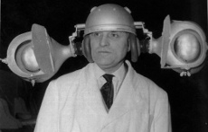
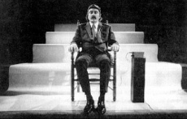

Early prototypes, 2011.
Early prototypes, 2011.The basis of our current work in physical, adaptive, contextual, bio-informed sound design and performance research is in a series of projects combining physiological computing and generative music.
Early prototypes, 2011.
In 2011, Ove Holmqvist, Dave Murphy and Joonas Paalasmaa were encouraged by the Discovery Research Group for Computational Creativity at the University of Helsinki’s Department of Computer Science to create the EPhysMus project, as it was a way to present algorithmic processing of real-world data in a musical context. Performances using the technology were made at various academic events, for example at the 13th World Congress for Science Journalists and the 11th International Symposium on Intelligent Data Analysis.
Live in Eteläsuomalainen osakunta, 2012
Our current development team formed in May, 2016. Ove Holmqvist was joined by long-time associates Henri David and Mark Meddings to create the second iteration of the mobile app.
There were many forerunners in the quest to make music using biological processes, some largely forgotten. Since the mid-1960’s, artists have used biosignals as an alternative means of input. Pioneers in this field include Alvin Lucier, Manford L. Eaton, Richard Teitelbaum, David Rosenboom, Erkki Kurenniemi and Ralph Lundsten. A typical application of biosignals has been to generate sounds based on EEG or ECG measurement.

Alvin Lucier and his EEG-based bio-music system.
Sources: 1,
2.


Manford L. Eaton envisioned complex bio-music systems including multi-modal measurement and feedback loops.
Source: Manford L. Eaton. 1974. Bio-music. Something Else Press.
Biomusic systems were theoreticized as early as 1933 by the Italian futurists Filippo Tommaso Marinetti and Pino Masnata, when they proposed the “reception amplification and transformation of vibrations emitted by living beings...of states of mind”. A forerunner in biomechanical music was Solomon Nikritin, who conceived a notation system for postures. In the emerging field of film sound, concepts such as physiological mapping of sound were studied by Arseny Avraamov while Dziga Vertov’s and Nikolai Timofeev’s biomechanical ballet was even endorsed by Charlie Chaplin. Léon Theremin conducted some music-related hypnosis experiments and created a body-controlled instrument, the Terpsitone.
{% include footer.html %}